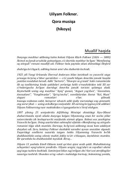

QMUilyam Folknerning hayoti va uning ta’sirli “Qora musiqa” hikoyasi.
Ushbu kitob mashhur amerikalik yozuvchi Uilyam Folknerning hayoti va ijodiy yo‘liga bag‘ishlangan ma’lumotlar hamda uning “Qora musiqa” hikoyasini o‘z ichiga oladi. Asarda inson qismati, yolg‘izlik va hayotning kutilmagan burilishlari badiiy tilda tasvirlangan.